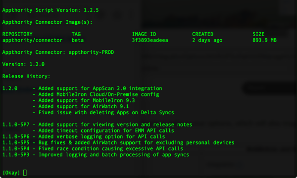

Some commands in the script are useful for troubleshooting or identifying details of your Connector.
A - About Connector Images. Displays details of current image, including version and release notes if available.

Use Manage Instances to start, stop, or restart your Connector. Some reasons you may want to use these options include:
- If you have any configuration errors, such as authentication, you may want to Kill Connector and create a new configuration, then boot that instance.
- If you have the latest Connector image, you can boot that instead of reinstalling.
- If you have a running instance of Connector but want to restart it, you can use restart instead of kill and reboot.
Use logs and other advanced options to investigate issues with your system.